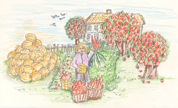
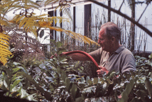

| How did my love of growing plants and raising animals start? Born in Chicago in 1951, how did I come to live in the country? There were several major events that opened my eyes and changed the way I thought and acted. Our family had a small garden in the back yard of our house in Chicago. It was about 18’ x 12’ squeezed between the garage, the fence with our neighbor and the alley. Tomatoes, green beans, carrots, and beets were planted. Rhubarb grew in a narrow spot behind the garage next to the alley. |
|||||||||||||
| Beginnings | |||||||||||||
|  | Abundance During the late summer, our family would visit our aunt, uncle and cousins who lived on their parents farm northwest of Chicago, for a yearly corn boil. The farm was spacious with room to run around and many different places to explore. In the front yard were apple trees full of big red apples. We helped in the garden to pick bushels of tomatoes and dig up carrots. I found an amazing large carrot with five roots. It looked just like a hand! |
||||||||||||
| A leap of faith During high school, I attended Saturday morning lectures at the Art Institute of Chicago. In the afternoon, I walked around the downtown area checking out all the stores. I always seemed to end up at the little health food store looking at books. I discovered Adelle Davis’ books, Let’s Eat Right to Keep Fit and Let’s Cook it Right. One day, I met an elderly woman who seemed to know a lot about nutrition. She offered to teach me about being healthy and nutrition in a two hour session which included a healthy lunch for $25. I wrote down her phone number and address. She lived up in a high rise building several blocks away. Part of me was terrified... meeting a strange woman, going to her 14th floor apartment, alone. It was all the things I knew I should not do. However, my gut feeling that I should feel better than I did, won out. I needed guidance, suggestions and encouragement. I arranged a time and went for my session. I was uneasy as she opened the door, but relaxed a bit seeing we were alone and on the table was the lunch she had prepared for me. There were many foods I had never tasted, but the beautiful green leafy salad was a heavenly treat. All I had known was iceberg lettuce, which tasted like cardboard! The two hours went quickly, and I knew I had launched into a new life. |
|||||||||||||
| Diversity In 1969, I started college at a city university and also began working at their greenhouse. My boss (see Mr. Mac story) had the student workers plant a little garden for our eating. I saw vegetables grow I had never seen before, peas, swiss chard, cabbages and cucumbers. And, of course, I wanted to plant these vegetables at home. It was a fight to get my parents permission to enlarge the garden by one foot! Fortunately, the second foot enlargement was easier. |
 | ||||||||||||